SAT: Supervisor Regularization and Animation Augmentation for Two-process Monocular Texture 3D Human Reconstruction
Abstract
Monocular texture 3D human reconstruction aims to create a complete 3D digital avatar from just a single front-view human RGB image. However, the geometric ambiguity inherent in a single 2D image and the scarcity of 3D human training data are the main obstacles limiting progress in this field. To address these issues, current methods employ prior geometric estimation networks to derive various human geometric forms, such as the SMPL model and normal maps. However, they struggle to integrate these modalities effectively, leading to view inconsistencies, such as facial distortions. To this end, we propose a two-process 3D human reconstruction framework, SAT, which seamlessly learns various prior geometries in a unified manner and reconstructs high-quality textured 3D avatars as the final output. To further facilitate geometry learning, we introduce a Supervisor Feature Regularization module. By employing a multi-view network with the same structure to provide intermediate features as training supervision, these varied geometric priors can be better fused. To tackle data scarcity and further improve reconstruction quality, we also propose an Online Animation Augmentation module. By building a one-feed-forward animation network, we augment a massive number of samples from the original 3D human data online for model training. Extensive quantitative and qualitative experiments on two benchmarks show the superiority of our approach compared to state-of-the-art methods.
Comparison with SOTA Methods
| Input Image | Ours | PSHuman | GTA | ICON |
|---|---|---|---|---|
| 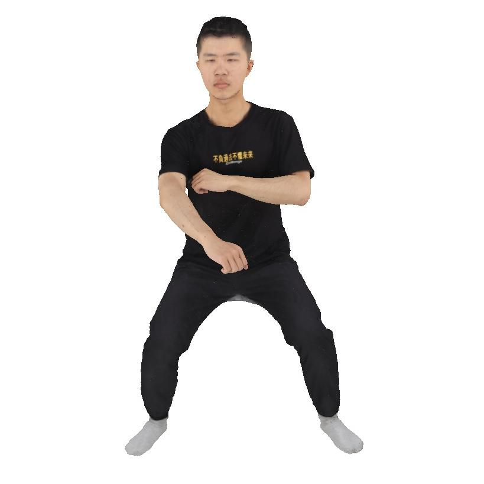 | 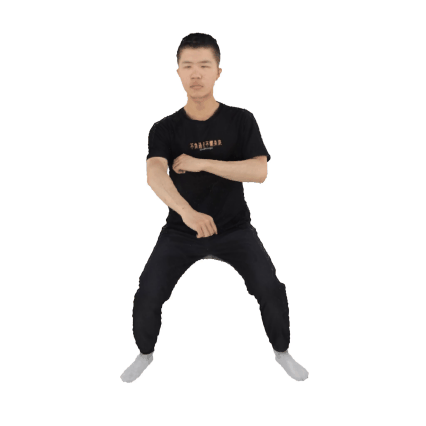 | 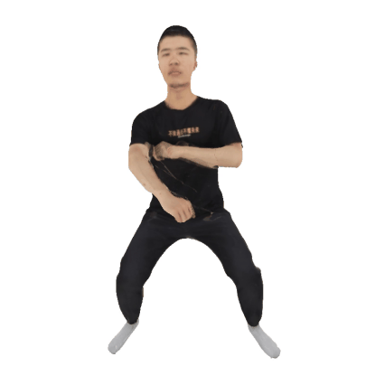 | 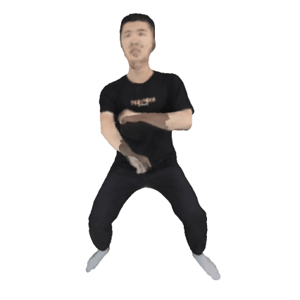 | 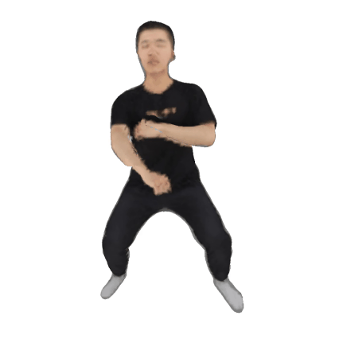 |
| SiFU | SiTH | Human3diff | PiFu | ECON |
| 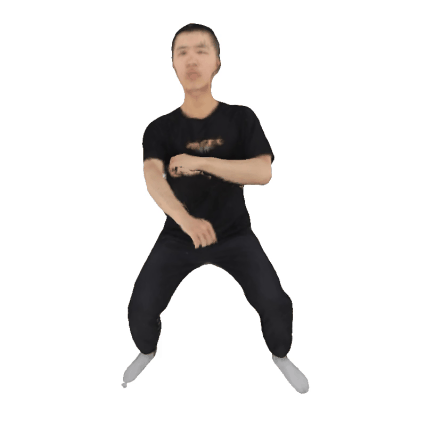 |  |
 |
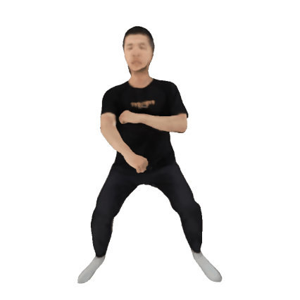 |
| Input Image | Ours | PSHuman | GTA | ICON |
|---|---|---|---|---|
| 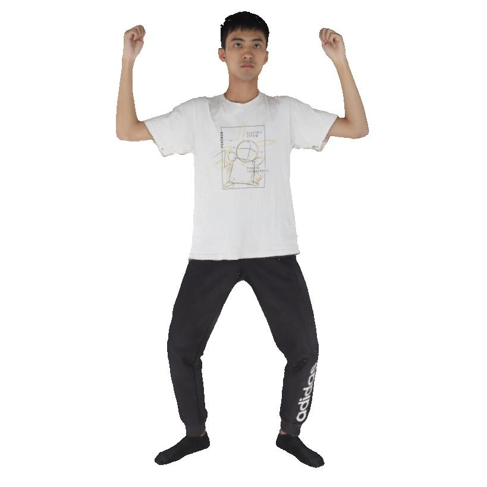 | 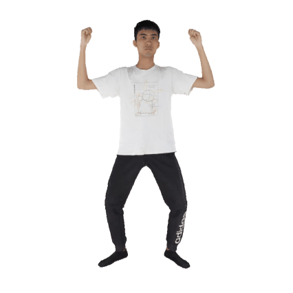 | 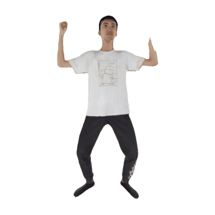 | 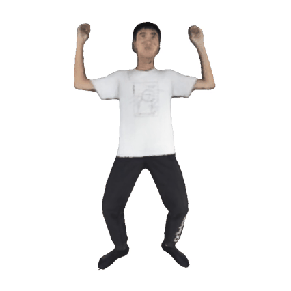 | 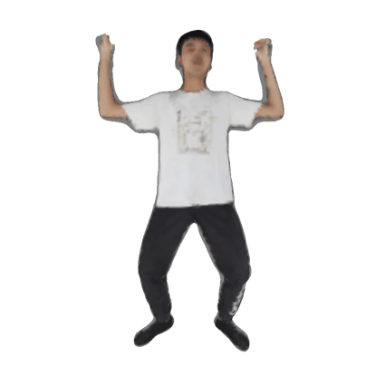 |
| SiFU | SiTH | Human3diff | PiFu | ECON |
| 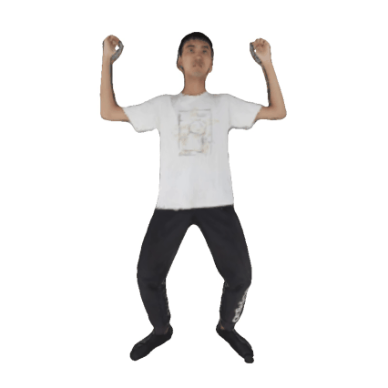 | 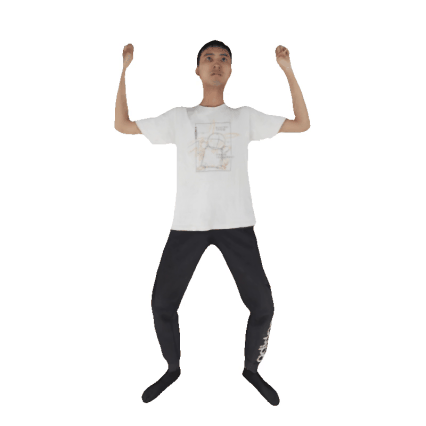 | 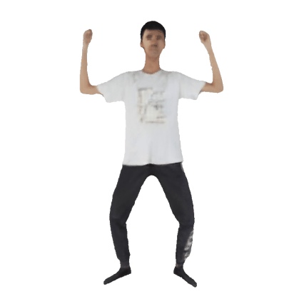 | 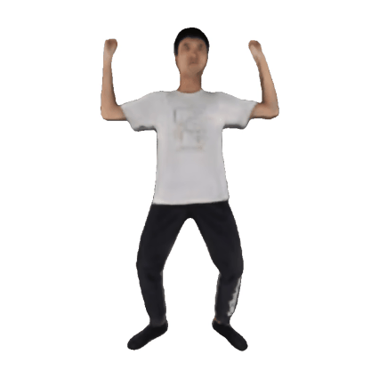 |
Method Overview
We introduce a novel framework, SAT, for the task of monocular texture 3D human reconstruction, which comprises two key processes: United Geometry Learning (UGL) and Cascading Gaussian Texturing (CGT). Central to these processes are two innovative modules: Supervised Feature Regularization (SFR) and Online Animation Augmentation (OAA). In the UGL process, we extract different-modality geometric features from the input image using various prior models and integrate them into a united geometric learning network for reconstructing 3D human normal Gaussians. To enhance this process, the SFR module is employed. It involves training a multi-view supervisor model that generates multi-level supervisor feature maps, which serve as a regularizing force for monocular geometry learning. The CGT process aims to align with the output distribution of the UGL process while preventing cascading errors. It utilizes the 3D geometry human Gaussian derived from UGL, alongside the input image, to reconstruct the 3D texture Gaussian. To further boost reconstruction quality and address the limited availability of human 3D data, we introduce the OAA module. This module trains an animation model that dynamically generates more pose-varied 3D human samples, augmenting the existing dataset for enhanced model training.